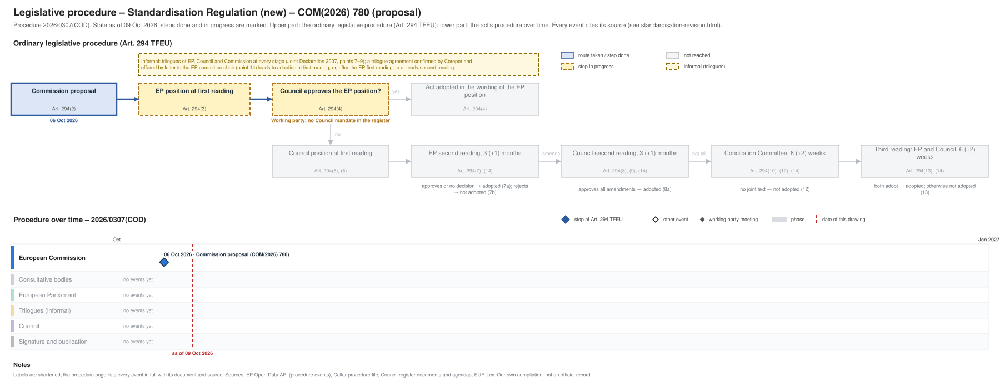

← Regulation timeline › Standardisation Regulation (new) › Legislative procedure · All procedures
Procedure 2026/0307(COD), ongoing, as of 09 Oct 2026. Drawing: SVG · PNG · PDF (A3) · draw.io · Page as Markdown: standardisation-revision.md
| Stage | Commission proposal |
|---|---|
| Parliament | not yet referred to committee |
| Council | working party, latest document 08 Oct 2026 |
| Latest activity | 08 Oct 2026 · Council: ANNEXES to the Proposal for a REGULATION OF THE EUROPEAN PARLIAMENT AND OF THE COUNCIL on … (ST 14141/26 ADD 1) |
| Next steps | Referral to an EP committee; Council working party |

| Date | Actor | Event | Document | Source |
|---|---|---|---|---|
| 2026-10-06 | European Commission | Commission proposal (Art. 294(2) TFEU) | COM(2026) 780 | Cellar procedure file 2026/307 (CELEX 52026PC0780) |
Every document the Council register, the EU database of the Parliament of Austria or the EP lists for the procedure, with its state: public documents link to the official file; documents that are not public link to their entry in the Austrian database where there is one (metadata only). Status: public; not public; not public, leak available (an unofficial copy is known to circulate outside the institutions; it is neither published nor quoted here). Released: when a document listed as not public was released, by the date of the Council's public PDF (a technical date) or else the day our daily check found it public.
| Date | Document | Kind | Subject | Status | Released | Text |
|---|---|---|---|---|---|---|
| 2026-10-08 | ST 14141/26 ADD 1 | council-note | ANNEXES to the Proposal for a REGULATION OF THE EUROPEAN PARLIAMENT AND OF THE COUNCIL on European standardisation, repealing Regulation (EU) No 1025/2012 of … | public | – | – |
Unofficial Markdown conversions for reading, searching and project folders; only the official document is authentic. "Read" opens the rendered text on GitHub, where a link to a provision (#art-13, #rec-12, #annex-i) jumps to it.
| Date | Stage | Document | Markdown | Read |
|---|---|---|---|---|
| 2026-10-06 | com-proposal | 2026-10-06_com-proposal-st-14141-26 | en | GitHub |
| 2026-10-06 | com-proposal | CELEX 52026PC0780 | en | GitHub |